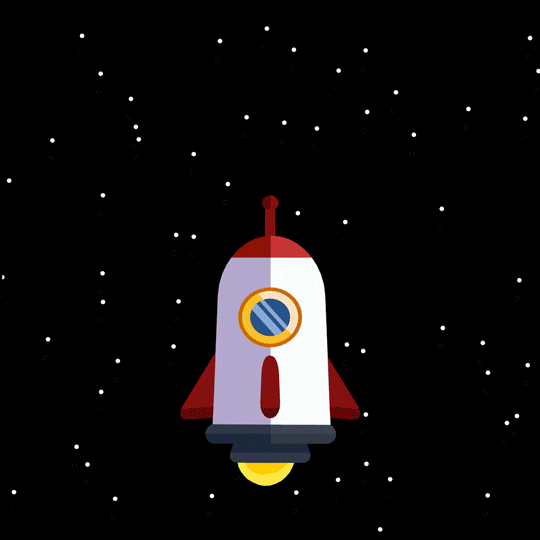

Bem, acho que para que possamos entender bem certinho a grande e conhecida "Corrida Espacial", temos que ter um resumo em nossa mente da "Guerra Fria", a guerra fria foi uma guerra composta por dois países, Estados Unidos (EUA) e a nossa grandiosa União Soviética (URSS), foi um conflito político-ideológico que foi travado entre 1947 e 1991. Bem as causas da guerra fria foi a polarização do mundo em dois grandes blocos, um ao capitalismo e o outro ao comunismo, basicamente separou os tipos de governos.
Agora que sabemos o que foi a guerra fria vamos entender a corrida espacial, vou começar da rivalidade, os EUA e URSS já eram rivais por causa da guerra fria, isso levou uma competição para quem chega antes a lua. Apollo 18 e Soyuz 19 é...
Bem os vencedores de tudo isso foram os Americanos, mas isso tem história, Depois que o presidente John F. Kennedy aumentou as apostas e estabeleceu claramente a meta de pousar um homem a lua, ambos os países começaram a trabalhar em foguetes. o primeiro módulo foi Saturno V, cabiam 3 pessoas e um módulo de pouso. Isso foi um marco e tanto para os EUA ainda mais na época.

Uma conquista Singular que os estadunidenses consideraram ofuscar qualquer conquistas sovi√©tica anterior. Mas √© controverso, pois ao mesmo tempo os sovi√©ticos criaram dois foguetes tripulados, por√©m não teve sucesso üò≠. O conhecido foguete N1
Bom por incrível que pareça o "BIXO" que nos faz passar muita raiva foi a causa de o homem chegar a lua, foi uma mosca. As moscas foram transportadas num V2 dos americanos lançado em 1947, que voltaram em segurança. Isso foi os EUA, já os Soviéticos são mais frios, eles simplesmente lançaram uma cachorrinha, a Laika, lançada em 1947 na Sputinik 2 e infelizmente morta algumas horas após o início da viagem devido ao stress e soberaquecimento. Os primeiros animais que voltaram vivos foram as macacas Able e Miss, os EUA que conseguiram esse tal feito. Algum tempo depois finalmente os HUMANOS conseguiram chegar a lua, os EUA fizeram isso, o homem que pisou fou Yuri Gagarin oi o primeiro homem no espaço, em um voo orbital de 1 hora e 48 minutos, a bordo da nave Vostok 1. O voo de Gagarin ocorreu em 12 de abril de 1961. Neste voo ele disse as famosas frases: "A Terra é azul", e "Olhei para todos os lados, mas não vi Deus".
O fim da corrida espacial aconteceu em 17 de julho de 1975, quando uma missão espacial foi realizada em conjunto por Americanos e Soviéticos. Mais conhecida como Appolo 18 enviada pelos americanos e a Soyuz 19 pelos Soviéticos... No fim os Estados Unidos acabaram Ganhando a corrida á Lua. Foi isso que aconteceu...
Nomes: Felipe da Silva Strapazzon, Erik Menegatti Bertotti, Kaua Felipe e Kaue Pereira.